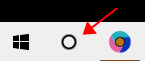
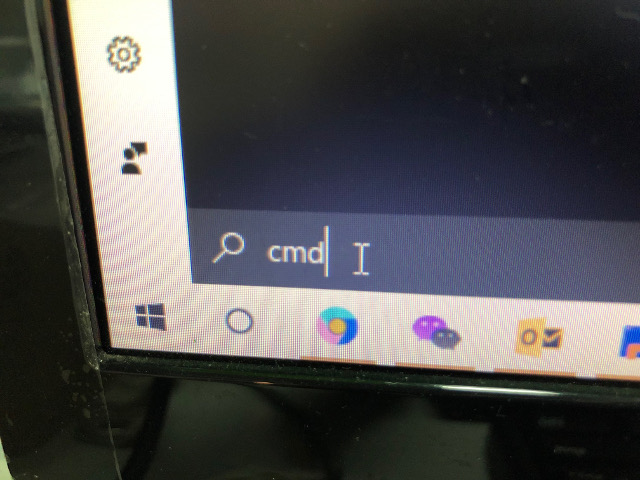
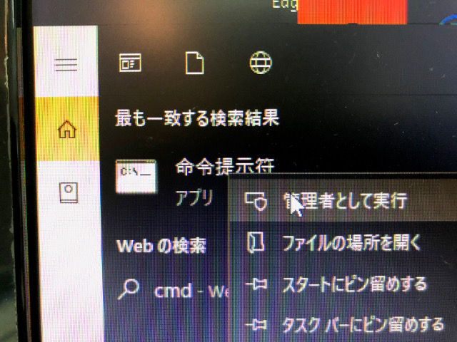
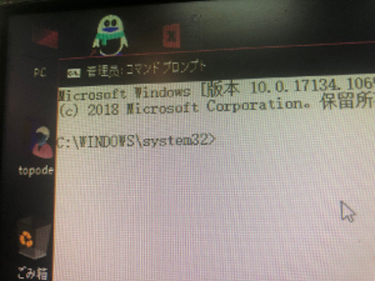

How to uninstall Win10 Edge browser
C:\Windows\SystemApps\Microsoft.ECApp_8wekyb3d8bbwe is Edge s location.First,you need to own this folder,
Click the second icon from left on task bar

In
the search box type ‘cmd’

Right
click,select ‘run as administrator’,

In
the command window,

Run
takeown /f C:\Windows\SystemApps\Microsoft.MicrosoftEdge_8wekyb3d8bbwe
icacls C:\Windows\SystemApps\Microsoft.MicrosoftEdge_8wekyb3d8bbwe /grant administrators:f
Meaning
Change the owner of the directory to you.
Grant user administrator access to the directory.
Now you can delete or rename the directory,then when you click Edge icon in start menu, it will not response,but I dont know how to delete the icon in start menu.